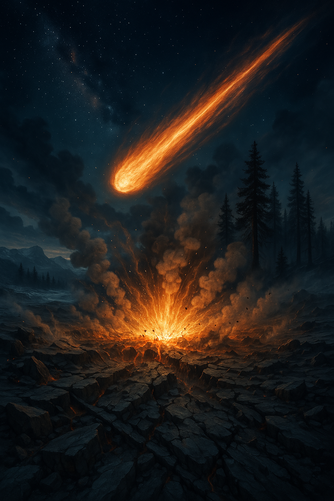

EMERGENCE OF HUMANS
Homo sapiens appear in Africa
Explore key events from the dawn of civilization to the modern era.
Origin of Homo sapiens
Homo sapiens appear in Africa
Human migration
First major wave of human migration from Africa to Asia and beyond
Upper Paleolithic begins
Period of advanced stone tool industries, cave art, and expanded social networks
Early symbolic thought
Earliest evidence of symbolic thought and artistic expression
Cave art flourishes
Remarkable cave paintings appear in Europe (Lascaux, Chauvet)
Ice Age peak
Period of maximum extent of ice sheets, with sea levels 120 meters lower than present day
Magdalenian Culture
Flourishing of the Magdalenian culture in Western Europe, known for sophisticated bone/antler tools and renowned cave art (e.g., Lascaux, Altamira).
Bølling-Allerød Warming
A significant warming period begins after the Last Glacial Maximum, leading to ice sheet retreat and ecosystem changes.
Younger Dryas Begins
An abrupt return to near-glacial conditions interrupts the post-glacial warming trend, lasting over a millennium.
Impact Event (Theoretical)
Hypothesized comet/asteroid impact or airburst event proposed as a trigger for the Younger Dryas cooling and associated environmental changes.
Megafauna/Clovis Changes
Accelerated extinction of large mammals (mammoths, mastodons) and significant transformation/decline of the Clovis Paleo-Indian culture coincides with Younger Dryas onset.
End of Younger Dryas
Rapid warming resumes, marking the end of the last major cold period of the Pleistocene and the beginning of the Holocene epoch.
World's oldest temple
Construction of massive stone pillars arranged in circles with carved animals and symbols in modern-day Turkey
Agricultural innovations
First evidence of intentional plant management and early farming techniques developing across fertile regions
Agricultural beginnings
First evidence of deliberate cultivation of wild grains like wheat and barley in the Middle East
Mehrgarh Settlement
Early agricultural settlement in the Indus Valley region, precursor to the Indus Valley Civilization
Early settlement
Development of one of the world's oldest continuously inhabited settlements with protective walls and a tower
Domestication of Cattle
Domestication of cattle for meat, milk, and labor in the Near East region
Göbekli Tepe Buried
The monumental structures at Göbekli Tepe are intentionally buried under layers of earth, preserving the site.
Animal domestication
Evidence of early domestication of sheep, goats, and other animals for food, materials, and labor
Vinča Culture
Advanced Neolithic culture in Southeast Europe known for sophisticated pottery and early copper metallurgy
Large settlement
Large Neolithic settlement in Anatolia with houses built adjacent to each other and entered through roofs
Jiahu Symbols
Early symbolic markings found on pottery in Jiahu, China, possibly representing an early form of proto-writing
Ceramic technology
Widespread adoption of fired pottery for storage, cooking, and artistic expression across the Near East
Farming spread
Agricultural techniques and domesticated crops spread into Europe through the Balkans and along the Mediterranean
Proto-cities emerge
Larger settlements show evidence of specialized crafts, social hierarchies, and organized public spaces
Early metallurgy
First evidence of copper smelting in the Balkans and Middle East, marking the beginning of human metalworking
Irrigation agriculture
Development of sophisticated irrigation systems in Mesopotamia, enabling large-scale agriculture in arid regions
Long-distance trade
Extensive trade networks develop across the Near East, exchanging raw materials, finished goods, and ideas
Uruk Period begins
Rise of the first true cities in southern Mesopotamia, with Uruk becoming the world's largest urban center
Proto-writing
Development of clay tokens, seals, and counting devices for record keeping in Mesopotamia
Wheel invention
The wheel is invented, first for pottery making (potter's wheel) and later adapted for transportation
Early Dynastic Egypt
Formation of early Egyptian states in the Nile Valley prior to unification
First writing system
Development of cuneiform writing in Mesopotamia, the world's earliest known writing system
Egyptian unification
Unification of Upper and Lower Egypt under King Narmer (Menes), founding the First Dynasty
Sumerian city-states
Development of major city-states like Ur, Uruk, and Lagash in Mesopotamia
Egyptian Old Kingdom
Beginning of the Old Kingdom period in Egypt, known for monumental architecture including the Step Pyramid and Great Pyramids
Great Pyramid of Giza
Construction of the Great Pyramid of Giza, the largest of the Egyptian pyramids and one of the Seven Wonders of the Ancient World
Indus Valley Civilization
Urban civilization in South Asia with sophisticated city planning, drainage systems, and standardized weights and measures
Epic of Gilgamesh
Composition of one of the earliest known literary works, telling the story of the king of Uruk and his quest for immortality
Akkadian Empire
Sargon of Akkad creates the world's first multi-ethnic empire, uniting Mesopotamia under a single ruler
Minoan Civilization
First advanced European civilization develops on Crete
Phoenician Alphabet
Development of the first widely used consonantal alphabet, ancestor of many modern scripts
Phoenician city-states
Phoenicians expand Mediterranean trade networks
Founding of Rome
Traditional date for the founding of Rome
Classical Age
Advances in philosophy, art, and science in Athens
Unification of China
Qin Shi Huang unifies China and begins the Great Wall
Roman Empire
Roman Republic transitions to the Roman Empire
Fall of Rome
Romulus Augustulus is deposed, marking the fall of the Western Roman Empire
Islamic Expansion
Beginning of Islamic expansion across the Middle East and North Africa
Holy Roman Empire
Charlemagne crowned as Holy Roman Emperor
Angkor Empire
Angkor Empire reaches its peak in Southeast Asia
Age of Exploration
Columbus reaches the Americas, beginning European colonization
Scientific Revolution
Scientific method and empirical research transform knowledge
Napoleonic Era
Napoleon Bonaparte crowned Emperor of France
World War I
First worldwide industrial war begins
End of Cold War
Soviet Union dissolves, ending the Cold War
September 11 Attacks
Terrorist attacks in the United States lead to global conflicts and security changes
Global Financial Crisis
Worldwide economic downturn triggered by the collapse of the housing market
Arab Spring
Wave of pro-democracy protests and uprisings across the Arab world
Global Pandemic
Worldwide health crisis that transformed global society and economies
European Conflict
Largest conventional military conflict in Europe since World War II
AI Revolution
Rapid advances in AI technology transform industries and raise new ethical questions